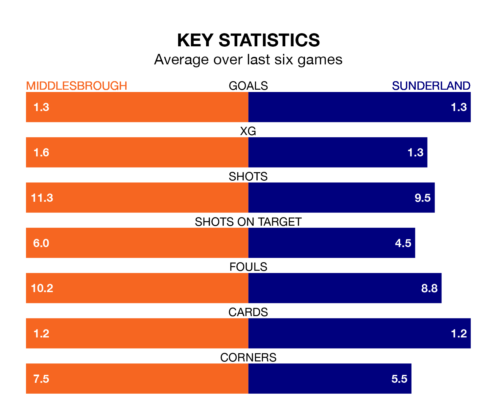

Middlesbrough host Sunderland on Sunday at the Riverside Stadium in EFL Championship.
In their last league match, on January 20, Middlesbrough drew with Rotherham United 1-1 at home, with their goal scored by Marcus Forss.
Sunderland won, 3-1 at home against Stoke City on January 27, with Abdoullah Ba, Mason Burstow and Pierre Ekwah on the scoresheet.
In the last 10 years, Middlesbrough and Sunderland have played each other on eight occasions. Middlesbrough won six of them, Sunderland one, and they drew once.
On average, the Boro scored 1.8 goals and the Black Cats 0.8 in those matches.
Their last meeting was on October 7, when Middlesbrough won 4-0 away.
With 42 goals in 28 games so far this season, Middlesbrough are scoring more than average in the league with 1.5 goals per game. But they are conceding more than average too, letting in 41 goals at a rate of 1.5 per game.
Sunderland, meanwhile, are average scorers, with 1.4 goals per game. They have conceded 1.1 goals per game.
In Jack Clarke, the Black Cats have one of the league's most on-form strikers so far this season. He has notched 13 goals in 29 appearances, to sit fourth in the scoring charts.
The Boro's top scorers, with five goals each, are Emmanuel Latte Lath and Isaiah Jones.
The away team are seventh in the table after 29 games, of which they have won 13 and drawn four, earning 43 points.
The hosts are four places behind Sunderland in 11th, with 12 wins and four draws putting them on 40 points.
Middlesbrough are in mixed form in EFL Championship, with three wins and a draw from their last six games.
And also with three wins and a draw over that period, Sunderland's form is identical – they have both taken 10 points from 18.
Sunday's match will be refereed by Darren England, who has taken charge of nine EFL Championship games so far this season, issuing two red cards and booking 54 players. He has awarded five penalties.
The last Middlesbrough game England refereed was a 3-2 away loss to Leeds United on December 2. He is yet to oversee a match featuring Sunderland this season.
Updated: 14:12 (UTC), 02/02/24